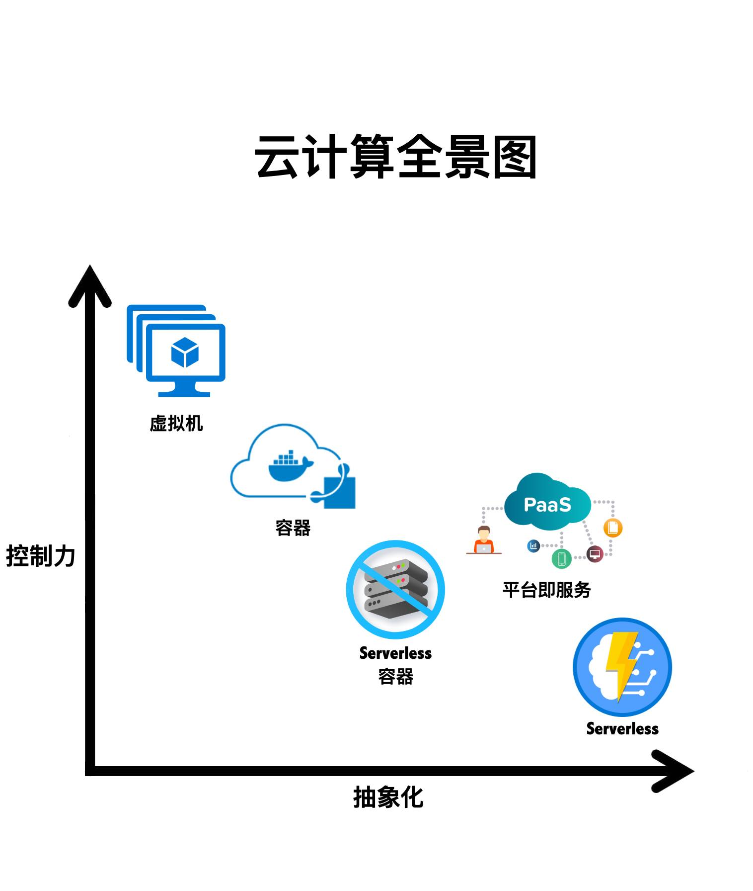
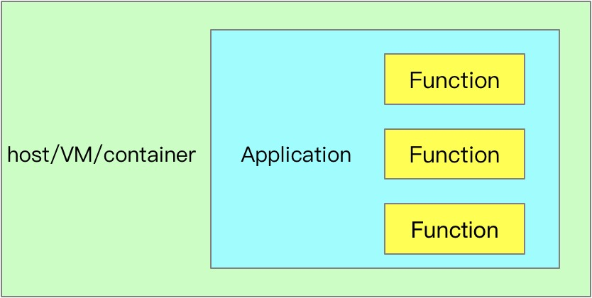
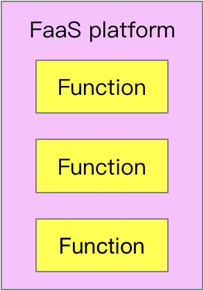
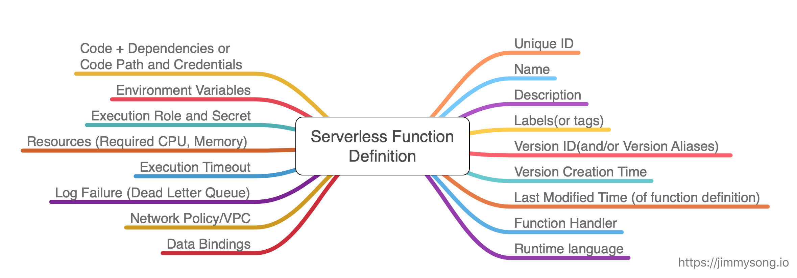
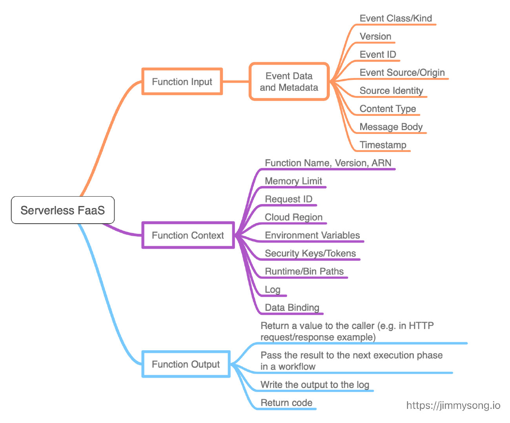
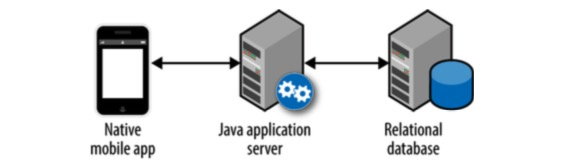
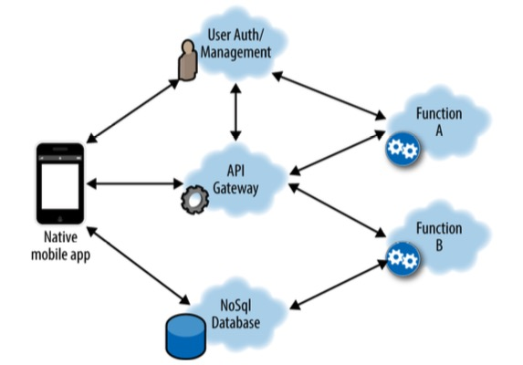

理解Serverless
No silver bullet. - The Mythical Man-Month
许多年前，我们开发的软件还是C/S（客户端/服务器）和MVC（模型-试图-控制器）的形式，再后来有了SOA，最近几年又出现了微服务架构，更新一点的有Cloud Native（云原生）应用，企业应用从单体架构，到服务化，再到更细粒度的微服务化，应用开发之初就是为了应对互联网的特有的高并发、不间断的特性，需要很高的性能和可扩展性，人们对软件开发的追求孜孜不倦，希望力求在软件开发的复杂度和效率之间达到一个平衡。但可惜的是，NO SILVER BULLET！几十年前（1975年）Fred Brooks就在The Mythical Man-Month中就写到了这句话。那么Serverlss会是那颗银弹吗？
云改变了我们对操作系统的认知，原来一个系统的计算资源、存储和网络是可以分离配置的，而且还可以弹性扩展，但是长久以来，我们在开发应用时始终没有摆脱的服务器的束缚（或者说认知），应用必须运行在不论是实体还是虚拟的服务器上，必须经过部署、配置、初始化才可以运行，还需要对服务器和应用进行监控和管理，还需要保证数据的安全性，这些云能够帮我们简化吗？让我们只要关注自己代码的逻辑就好了，其它的东西让云帮我实现就好了。
Serverless介绍
Serverless（无服务器架构）指的是由开发者实现的服务端逻辑运行在无状态的计算容器中，它由事件触发， 完全被第三方管理，其业务层面的状态则被开发者使用的数据库和存储资源所记录。
Serverless 是云原生技术发展的高级阶段，使开发者更聚焦在业务逻辑，而减少对基础架构的关注。

下图来自谷歌云平台官网，是对云计算的一个很好的分层概括，其中 serverless 就是构建在虚拟机和容器之上的一层，与应用本身的关系更加密切。
Serverless架构是云的自然延伸，为了理解serverless，我们有必要回顾一下云计算的发展。
IaaS
2006年AWS推出EC2（Elastic Compute Cloud），作为第一代IaaS（Infrastructure as a Service），用户可以通过AWS快速的申请到计算资源，并在上面部署自己的互联网服务。IaaS从本质上讲是服务器租赁并提供基础设施外包服务。就比如我们用的水和电一样，我们不会自己去引入自来水和发电，而是直接从自来水公司和电网公司购入，并根据实际使用付费。
EC2真正对IT的改变是硬件的虚拟化（更细粒度的虚拟化），而EC2给用户带来了以下五个好处：
- 降低劳动力成本：减少了企业本身雇佣IT人员的成本
- 降低风险：不用再像自己运维物理机那样，担心各种意外风险，EC2有主机损坏，再申请一个就好了。
- 降低基础设施成本：可以按小时、周、月或者年为周期租用EC2。
- 扩展性：不必过早的预期基础设施采购，因为通过云厂商可以很快的获取。
- 节约时间成本：快速的获取资源开展业务实验。
以上说了是IaaS或者说基础设施外包的好处，当然其中也有弊端，我们将在后面讨论。
以上是AWS为代表的公有云IaaS，还有使用OpenStack构建的私有云也能够提供IaaS能力。
PaaS
PaaS（Platform as a Service）是构建在IaaS之上的一种平台服务，提供操作系统安装、监控和服务发现等功能，用户只需要部署自己的应用即可，最早的一代是Heroku。Heroko是商业的PaaS，还有一个开源的PaaS——Cloud Foundry，用户可以基于它来构建私有PaaS，如果同时使用公有云和私有云，如果能在两者之间构建一个统一的PaaS，那就是“混合云”了。
在PaaS上最广泛使用的技术就要数docker了，因为使用容器可以很清晰的描述应用程序，并保证环境一致性。管理云上的容器，可以称为是CaaS（Container as a Service），如GCE（Google Container Engine）。也可以基于Kubernetes、Mesos这类开源软件构件自己的CaaS，不论是直接在IaaS构建还是基于PaaS。
PaaS是对软件的一个更高的抽象层次，已经接触到应用程序的运行环境本身，可以由开发者自定义，而不必接触更底层的操作系统。
什么是 Serverless
下面将分别从简洁版和进阶版向您展示什么是 Serverless。
简洁版
就像无线互联网实际有的地方也需要用到有线连接一样，无服务器架构仍然在某处有服务器。开发者无需关注服务器，只需关注代码即可。
Serverless（无服务器架构）指的是服务端逻辑由开发者实现，运行在无状态的计算容器中，由事件触发， 完全被第三方管理，而业务层面的状态则记录在数据库或存储资源中。
进阶版
Serverless是由事件（event）驱动（e.g. http,pub/sub）的全托管计算服务。用户无需管理服务器等基础设施，只需编写代码和选择触发器(trigger)，（比如rpc请求，定时器等）并上传。其余的工作（实例选择、 扩缩容、部署、容灾、监控、日志、安全补丁等）全部由serverless系统托管。用户只需要为代码实际运行消耗的资源付费——代码未运行则不产生费用。
Serverless相对于serverful，对业务用户强调noserver（serverless并不是说没有服务器，只是业务人员无需关注服务器了，代码仍然是运行在真实存在的服务器上）的运维理念，业务人员只需要聚焦业务逻辑代码。
Serverless相比serverful，有以下3个改变（from Berkeley的总结）：
- 弱化了存储和计算之间的联系。服务的储存和计算被分开部署和收费，存储不再是服务本身的一部分，而是演变成了独立的云服务，这使得计算变得无状态化，更容易调度和扩缩容，同时也降低了数据丢失的风险。
- 代码的执行不再需要手动分配资源。不需要为服务的运行指定需要的资源（比如使用几台机器、多大的带宽、多大的磁盘等），只需要提供一份代码，剩下的交由serverless平台去处理就行了。当前阶段的实现平台分配资源时还需要用户方提供一些策略，例如单个实例的规格和最大并发数，单实例的最大cpu使用率。理想的情况是通过某些学习算法来进行完全自动的自适应分配。
- 按使用量计费。Serverless按照服务的使用量（调用次数、时长等）计费，而不是像传统的serverful服务那样，按照使用的资源（ECS实例、VM的规格等）计费。
Serverless的定义
Serverless不如IaaS和PaaS那么好理解，因为它通常包含了两个领域BaaS（Backend as a Service）和FaaS（Function as a Service）。
BaaS
BaaS（Backend as a Service）后端即服务，一般是一个个的API调用后端或别人已经实现好的程序逻辑，比如身份验证服务Auth0，这些BaaS通常会用来管理数据，还有很多公有云上提供的我们常用的开源软件的商用服务，比如亚马逊的RDS可以替代我们自己部署的MySQL，还有各种其它数据库和存储服务。
FaaS
FaaS（Functions as a Service）函数即服务，FaaS是无服务器计算的一种形式，当前使用最广泛的是AWS的Lambada。
现在当大家讨论Serverless的时候首先想到的就是FaaS，有点甚嚣尘上了。FaaS本质上是一种事件驱动的由消息触发的服务，FaaS供应商一般会集成各种同步和异步的事件源，通过订阅这些事件源，可以突发或者定期的触发函数运行。

传统的服务器端软件不同是经应用程序部署到拥有操作系统的虚拟机或者容器中，一般需要长时间驻留在操作系统中运行，而FaaS是直接将程序部署上到平台上即可，当有事件到来时触发执行，执行完了就可以卸载掉。

Serverless 中的函数
下图是 Serverless 中的（FaaS）函数定义，从图中可以看出与容器、12 要素及 Kubernetes 的运行时设计十分契合。

下图 FaaS 中函数输入、context 及输出。

以上两张图片根据 CNCF Serverless Whitepaper v1.0 绘制。
总结
两者都为我们的计算资源提供了弹性的保障，BaaS其实依然是服务外包，而FaaS使我们更加关注应用程序的逻辑，两者使我们不需要关注应用程序所在的服务器，但实际上服务器依然是客观存在的。
当我们将应用程序迁移到容器和虚拟机中时，其实对于应用程序本身的体系结构并没有多少改变，只不过有些流程和规定需要遵守，比如12因素应用守则，但是serverlss对应用程序的体系结构来说就是一次颠覆了，通常我们需要考虑事件驱动模型，更加细化的不熟形式，以及在FaaS组件之外保持状态的需求。
Serverless 的使用场景
虽然 Serverless 的应用很广泛，但是其也有局限性，Serverless 比较适合以下场景：
- 异步的并发，组件可独立部署和扩展
- 应对突发或服务使用量不可预测（主要是为了节约成本，因为 Serverless 应用在不运行时不收费）
- 短暂、无状态的应用，对冷启动时间不敏感
- 需要快速开发迭代的业务（因为无需提前申请资源，因此可以加快业务上线速度）
Serverless 的使用场景示例如：
- ETL
- 机器学习及 AI 模型处理
- 图片处理
- IoT 传感器数据分析
- 流处理
- 聊天机器人
CNCF Serverless whitepaper 中给出了诸多 Serverless 使用场景的详细描述。
我们以一个游戏应用为例，来说明什么是serverless应用。
一款移动端游戏至少包含如下几个特性：
- 移动端友好的用户体验
- 用户管理和权限认证
- 关卡、升级等游戏逻辑，游戏排行，玩家的等级、任务等信息
传统的应用程序架构可能是这样的：

- 一个app前端，iOS后者安卓
- 用Java写的后端，使用JBoss或者Tomcat做server运行
- 使用关系型数据库存储用户数据，如MySQL
这样的架构可以让前端十分轻便，不需要做什么应用逻辑，只是负责渲染用户界面，将请求通过HTTP发送给后端，而所有的数据操作都是有由后端的Java程序来完成的。
这样的架构开发起来比较容易，但是维护起来确十分复杂，前端开发、后端的开发都需要十分专业的人员、环境的配置，还要有人专门维护数据库、应用的更新和升级。

而在serverless架构中，我们不再需要在服务器端代码中存储任何会话状态，而是直接将它们存储在NoSQL中，这样将使应用程序无状态，有助于弹性扩展。前端可以直接利用BaaS而减少后端的编码需求，这样架构的本质上是减少了应用程序开发的人力成本，降低了自己维护基础设施的风险，而且利用云的能力更便于扩展和快速迭代。
Serverless架构的优点
今天大多数公司在开发应用程序并将其部署在服务器上的时候，无论是选择公有云还是私有的数据中心，都需要提前了解究竟需要多少台服务器、多大容量的存储和数据库的功能等。并需要部署运行应用程序和依赖的软件到基础设施之上。假设我们不想在这些细节上花费精力，是否有一种简单的架构模型能够满足我们这种想法？这个答案已经存在，这就是今天软件架构世界中新鲜但是很热门的一个话题——Serverless（无服务器）架构。
——AWS 费良宏
- 降低运营成本：
Serverless是非常简单的外包解决方案。它可以让您委托服务提供商管理服务器、数据库和应用程序甚至逻辑，否则您就不得不自己来维护。由于这个服务使用者的数量会非常庞大，于是就会产生规模经济效应。在降低成本上包含了两个方面，即基础设施的成本和人员（运营/开发）的成本。
- 降低开发成本：
IaaS和PaaS存在的前提是，服务器和操作系统管理可以商品化。Serverless作为另一种服务的结果是整个应用程序组件被商品化。
- 扩展能力：
Serverless架构一个显而易见的优点即“横向扩展是完全自动的、有弹性的、且由服务提供者所管理”。从基本的基础设施方面受益最大的好处是，您只需支付您所需要的计算能力。
- 更简单的管理：
Serverless架构明显比其他架构更简单。更少的组件，就意味着您的管理开销会更少。
- “绿色”的计算：
按照《福布斯》杂志的统计，在商业和企业数据中心的典型服务器仅提供5%～15%的平均最大处理能力的输出。这无疑是一种资源的巨大浪费。随着Serverless架构的出现，让服务提供商提供我们的计算能力最大限度满足实时需求。这将使我们更有效地利用计算资源。
在上面我们提到了使用IaaS给我们带来了五点好处，FaaS当然也包括了这些好处，但是它给我们带来的最大的好处就是多快好省。减少从概念原型到实施的等待时间，比自己维护服务更省钱。
降低人力成本
不需要再自己维护服务器，操心服务器的各种性能指标和资源利用率，而是关心应用程序本身的状态和逻辑。而且serverless应用本身的部署也十分容易，我们只要上传基本的代码但愿，例如Javascript或Python的源代码的zip文件，以及基于JVM的语言的纯JAR文件。不需使用Puppet、Chef、Ansible或Docker来进行配置管理，降低了运维成本。同时，对于运维来说，也不再需要监控那些更底层的如磁盘使用量、CPU使用率等底层和长期的指标信息，而是监控应用程序本身的度量，这将更加直观和有效。
在此看来有人可能会提出“NoOps”的说法，其实这是不存在的，只要有应用存在的一天就会有Ops，只是人员的角色会有所转变，部署将变得更加自动化，监控将更加面向应用程序本身，更底层的运维依然需要专业的人员去做。
降低风险
对于组件越多越复杂的系统，出故障的风险就越大。我们使用BaaS或FaaS将它们外包出去，让专业人员来处理这些故障，有时候比我们自己来修复更可靠，利用专业人员的知识来降低停机的风险，缩短故障修复的时间，让我们的系统稳定性更高。
减少资源开销
我们在申请主机资源一般会评估一个峰值最大开销来申请资源，往往导致过度的配置，这意味着即使在主机闲置的状态下也要始终支付峰值容量的开销。对于某些应用来说这是不得已的做法，比如数据库这种很难扩展的应用，而对于普通应用这就显得不太合理了，虽然我们都觉得即使浪费了资源也比当峰值到来时应用程序因为资源不足而挂掉好。
解决这个问题最好的办法就是，不计划到底需要使用多少资源，而是根据实际需要来请求资源，当然前提必须是整个资源池是充足的（公有云显然更适合）。根据使用时间来付费，根据每次申请的计算资源来付费，让计费的粒度更小，将更有利于降低资源的开销。这是对应用程序本身的优化，例如让每次请求耗时更短，让每次消耗的资源更少将能够显著节省成本。
增加缩放的灵活性
以AWS Lamba为例，当平台接收到第一个触发函数的事件时，它将启动一个容器来运行你的代码。如果此时收到了新的事件，而第一个容器仍在处理上一个事件，平台将启动第二个代码实例来处理第二个事件。AWS lambad的这种自动的零管理水平缩放，将持续到有足够的代码实例来处理所有的工作负载。
但是，AWS仍然只会向您收取代码的执行时间，无论它需要启动多少个容器实例要满足你的负载请求。例如，假设所有事件的总执行时间是相同的，在一个容器中按顺序调用Lambda 100次与在100个不同容器中同时调用100次Lambda的成本是 一样的。当然AWS Lambada也不会无限制的扩展实例个数，如果有人对你发起了DDos攻击怎么办，那么不就会产生高昂的成本吗？AWS是有默认限制的，默认执行Lambada函数最大并发数是1000。
缩短创新周期
小团队的开发人员正可以在几天之内从头开始开发应用程序并部署到生产。使用短而简单的函数和事件来粘合强大的驱动数据存储和服务的API。完成的应用程序具有高度可用性和可扩展性，利用率高，成本低，部署速度快。
以docker为代表的容器技术仅仅是缩短了应用程序的迭代周期，而serverless技术是直接缩短了创新周期，从概念到最小可行性部署的时间，让初级开发人员也能在很短的时间内完成以前通常要经验丰富的工程师才能完成的项目。
Serverless架构的缺点
我们知道没有十全十美的技术，在说了serverless的那么多优势之后，我们再来探讨以下serverless的劣势，或者说局限性和适用场景。
状态管理
要想实现自由的缩放，无状态是必须的，而对于有状态的服务，使用serverless这就丧失了灵活性，有状态服务需要与存储交互就不可避免的增加了延迟和复杂性。
延迟
应用程序中不同组件的访问延迟是一个大问题，我们可以通过使用专有的网络协议、RPC调用、数据格式来优化，或者是将实例放在同一个机架内或同一个主机实例上来优化以减少延迟。
而serverless应用程序是高度分布式、低耦合的，这就意味着延迟将始终是一个问题，单纯使用serverless的应用程序是不太现实的。
本地测试
Serverless应用的本地测试困难是一个很棘手的问题。虽然可以在测试环境下使用各种数据库和消息队列来模拟生产环境，但是对于无服务应用的集成或者端到端测试尤其困难，很难在本地模拟应用程序的各种连接，并与性能和缩放的特性结合起来测试，并且serverless应用本身也是分布式的，简单的将无数的FaaS和BaaS组件粘合起来也是有挑战性的。
Kubernetes上的Serverless 架构
Kubernetes 的蓬勃发展由催生了一系列以它为基础的 Serverless 应用，这是我整理的与 Serverless 相关的开源项目：
- dispatch - Dispatch is a framework for deploying and managing serverless style applications.
- eventing - Open source specification and implementation of Knative event binding and delivery.
- faas-netes - Enable Kubernetes as a backend for Functions as a Service (OpenFaaS) https://github.com/alexellis/faas
- firecamp - Serverless Platform for the stateful services https://www.cloudstax.io
- fission - Fast Serverless Functions for Kubernetes http://fission.io
- fn - The container native, cloud agnostic serverless platform. http://fnproject.io
- funktion - a CLI tool for working with funktion https://funktion.fabric8.io/
- fx - Poor man's serverless framework based on Docker, Function as a Service with painless.
- gloo - The Function Gateway built on top of Envoy.
- ironfunctions - IronFunctions - the serverless microservices platform. http://iron.io
- knative-lambda-runtime - Running AWS Lambda Functions on Knative/Kubernetes Clusters https://triggermesh.com
- kubeless - Kubernetes Native Serverless Framework http://kubeless.io
- nuclio - High-Performance Serverless event and data processing platform.
- openfaas - OpenFaaS - Serverless Functions Made Simple for Docker & Kubernetes https://blog.alexellis.io/introducing-functions-as-a-service/
- openwhisk - Apache OpenWhisk (Incubating) is a serverless, open source cloud platform that executes functions in response to events at any scale.
- riff - riff is for functions https://projectriff.io
- serverless - Serverless Framework – Build web, mobile and IoT applications with serverless architectures using AWS Lambda, Azure Functions, Google CloudFunctions & more! – https://serverless.com
- spec - CloudEvents Specification https://cloudevents.io
- thanos - Highly available Prometheus setup with long term storage capabilities.
以上列表来自 https://jimmysong.io/awesome-cloud-native/#serverless。
总结
Karl Marx说的好，生产力决定生产关系，云计算的概念层出不穷，其本质上还是对生产关系和生产力的配置与优化，生产者抛开场景意味追求高大上的技术将譬如“大炮打蚊子”，小题大做，鼓励大家为了满足大家的好奇心进行折腾，毕竟那么多科学发现和重大发明都是因为折腾出来的，不想要一匹跑的更快的马，而是发明汽车的福特，捣鼓炸药的诺贝尔，种豌豆的孟德尔……同时还是要考虑将技术产业化（或许能改变生产关系），提高生产力。